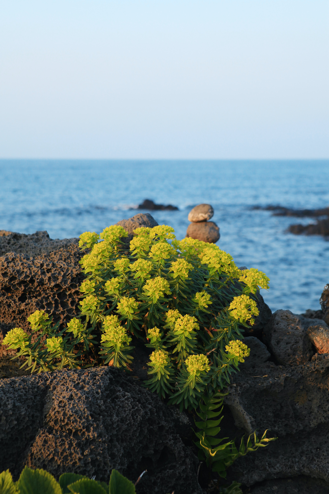

화사한 봄의 시작
집으로
봄
여름
가을
겨울

제주도
대한민국의 대표 관광지 제주도.
남해안의 맑은 바다와 따뜻한 기후 맛있는 음식들이 가득한 관광지인데요.
4계절에 상관없이 많이 방문하지만 봄에는 인기가 더 많습니다.
바로 제주도의 대표적인 봄꽃인 유채꽃이 개화하기 때문입니다.
매년 4월이 되면, 제주도에는 유채꽃이 피어나
섬 전체를 환하게 뒤덮습니다.
이번 봄 제주로 떠나 낭만적인 경치를 감상 해 보는건 어떨까요?